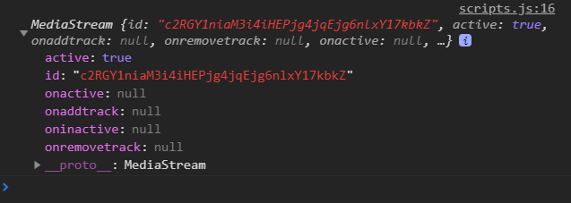
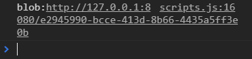
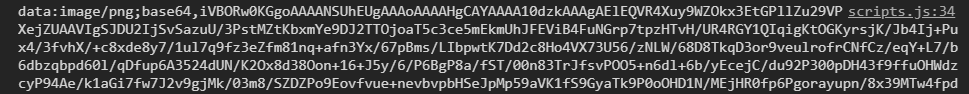

Demo(需打開電腦相機)
這個主題我們只要簡單學習操作使用者的電腦攝影機並拍下照片就好，
原作範例中有操作圖像imageData資料(色素陣列?)，個人覺得此技術太不常用了，所以另外筆記在這個範例中也有出現的、而且覺得重要js方法。
取得對象
一開始範例以幫我們定義好所有對象1
2
3
4
5const video = document.querySelector('.player');//預設player
const canvas = document.querySelector('.photo');//畫布呈現影像
const ctx = canvas.getContext('2d');
const strip = document.querySelector('.strip');//縮圖
const snap = document.querySelector('.snap');//拍照聲音
呼叫相機
總之就是透過一連串的方法去取得使用者的相機
好像也沒有為什麼，就是按照規定的寫法…1
2
3
4
5
6
7
8
9
10
11
12
13function getVideo(){
navigator.mediaDevices.getUserMedia({
video: true,
audio: false
}).then(function(localMediaStream){
video.src = window.URL.createObjectURL(localMediaStream);
video.play();
}).catch(err => {
console.log(err)
alert('請開啟相機')
});
}
getVideo()
過程中會取得一筆資料localMediaStream

再將這筆資料createObjectURL1
video.src = window.URL.createObjectURL(localMediaStream);
會出現一個叫做blob的東西，目前還不太懂他是什麼東西，我們在製作上傳圖片或檔案的時候會用到。

Blob（Binary Large Object）物件代表了一個相當於檔案（原始資料）的不可變物件。詳細資料
最後我們將將取得的資料指向video讓他播放就可以看到攝影機的畫面了。
畫在canvas上面
主要透過drawImage()方法在畫布上畫影像。1
2
3
4
5
6
7
8
9
10
11function normalPaint(){
ctx.drawImage(video, 0, 0, ww, wh);
requestAnimationFrame(normalPaint)
}
video.addEventListener('canplay', function(){
ww = canvas.width = video.videoWidth;
wh = canvas.height = video.videoHeight;
//主要用來取得正確比例
requestAnimationFrame(normalPaint)
});
我們透過canplay偵聽當video播放時，取得video的寬高並設定為畫布的比例，在此範例css已經將畫布寬設為100%，取得video寬高用意只是要維持正確比例。
ctx.drawImage(image, 0, 0, ww, wh)
我們相對於畫布起點(0,0)的位置畫寬為ww高為wh的image
拍照
在html的button已經設定好觸發條件和涵式名稱了1
2
3
4
5
6
7function takePhoto(){
//拍照聲音
snap.currentTime = 0;
snap.play()
//產出一張圖片的url
const dataURL = canvas.toDataURL();
}
按下拍照時播放snap的聲音。
透過toDataURL()方法會取得一大串恐怖的東西
這只是一部份…
這應該就是這一瞬間畫面的資料（拍到的照片）
顯示照片並下載
在同一個fuction中1
2
3
4
5
6const link = document.createElement('a')
link.href = dataURL
link.setAttribute('download','下載的檔案名稱')
link.innerHTML = `<img src="${dataURL}" alt="Handsome Man" />`
strip.insertBefore(link, strip.firstChild)
//strip.appendChild(link)
我們建立一個新的元素，並賦予其 download 屬性，讓<a>元素被點擊的時候，就下載 URL 所指的資料，而它的innerHTML為我們剛取得的圖片
並將新建<a>元素插入strip(<div class="strip"></div>)裡
補充insertBefore()
定義：insertBefore() 方法在您指定的已有子节点之前插入新的子节点。
寫法：document.getElementById("myList").insertBefore(newItem,existingItem);
- newItem：要插入的元素
- existingItem：現有的對象位置
在此範例中插入的位置我們可以選擇
最新的照片排在前面(即排在第一個元素之前):
strip.firstChild或strip.childNodes[0]
最新的排在最後面:
strip.childNodes[-1]
排在最後一個元素之前(應該不會有人這樣排)
strip.lastChild
補充appendChild()
在這個範例的insertBefore()似乎可以直接用appendChild()
顧名思義就是插入一個新的子物件(最新的排在最後)。1
strip.appendChild(link)
這裡有一篇很棒的關於appendChild()圖文解說，雖然在此範例我們沒有遇到問題，不過使用未來使用appendChild可能會遇到，所以就先筆記下來。
為什麼無法正確 appendChild ！？
重點：如果 appendChild 使用時，append 上去的是一個已存在的 node 時，它會做的是搬移，而非複製。